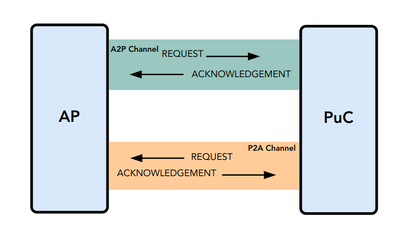

2.1. Transport
An RPMI transport is an abstraction over a physical medium used to send and receive messages between the application processors (APs) and the platform microcontroller (PuC). It provides bi-directional communication between a RISC-V privilege-level of application processors and a platform microcontroller. The application processors can have multiple RPMI transport instances with a platform microcontroller. Also, a platform can also have multiple microcontrollers each with its own RPMI transport instance as shown in the [fig_intro_trans_topology] below.
An RPMI transport instance consists of two logical bi-directional channels for message delivery as shown in the Figure 3 below. Each channel is capable of transferring messages in request-response pairs. A channel which transfers a request message from the application processors (APs) to the platform microcontroller (PuC) and response/acknowledgement back in opposite direction is called an A2P channel. Similarly, the channel for request messages from the platform microcontroller (PuC) to the application processors (APs) is called a P2A channel. The P2A channel also transfers notification messages to the application processors.
An RPMI transport instance must implement the A2P channel but the P2A channel is optional. Platforms which do not require requests and notification messages from the platform microcontroller can avoid implementing the P2A channel.
The current RPMI specification only defines a shared memory based transport but other transport types can be added in the future.

2.1.1. Shared Memory Transport
The RPMI shared memory transport defines a mechanism to exchange messages via shared memory which can be on-chip SRAM or a reserved portion of DRAM or some device memory. The RPMI shared memory transport does not specify where the shared memory resides in a platform, but it must be accessible from both the application processors and the platform microcontroller.
At a minimum, the platform must configure the physical memory attribute of the RPMI transport shared memory as an I/O type with read/write access that is coherent and non-cacheable for both the application processor and the platform microcontroller. The mechanism used by the platform to implement such memory attributes is implementation-defined.
| Such physical memory attributes are required to avoid the caching side-effects because it is possible that the application processor and the platform microcontroller are not cache-coherent, and using the shared memory may lead to caching side-effects such as data inconsistency between the platform microcontroller and the application processor, write propagation delays and other issues that can lead to race conditions. |
All data sent or received through the RPMI shared memory transport must follow little-endian byte-order.
The Figure 4 below shows the high-level architecture of the RPMI shared memory transport. The layout and attributes of a RPMI shared memory transport may be static for the platform microcontroller but must be discoverable by the application processors through hardware description mechanisms such as device tree or ACPI.
2.1.1.1. Queue Types
The RPMI shared memory transport consists of four unidirectional queues. The type of messages and the direction of message delivery is fixed for each RPMI shared memory transport queue. The Table 1 below provides a more detailed description of all RPMI shared memory transport queues.
| Name | Message Type | Description |
|---|---|---|
A2P REQ |
REQUEST |
The request message queue from the application processor to the platform microcontroller. |
P2A ACK |
ACKNOWLEDGEMENT |
The acknowledgement message queue from the platform microcontroller to the application processor. |
P2A REQ |
REQUEST & NOTIFICATION |
The request message queue from the platform microcontroller to the application processor. This queue is also used for sending the notification messages. |
A2P ACK |
ACKNOWLEDGEMENT |
The acknowledgement message queue from the application processor to the platform microcontroller. |
The A2P REQ queue is paired with P2A ACK queue to form the A2P channel of the RPMI shared memory transport. Similarly, the P2A REQ queue is paired with the A2P ACK queue to form the P2A channel of the RPMI shared memory transport. The Figure 5 below shows the high-level flow of messages in a RPMI shared memory transport.
2.1.1.2. Queue Layout
An RPMI shared memory queue is divided into M contiguous slots of equal size
which are used to form a circular queue. The size of each slot (or slot size)
must be a power-of-2 and must be at least 64 bytes. The slot size is same
across all RPMI shared memory queues and the physical address of each slot
must be aligned at slot size boundary.
The slot size should match with the maximum cache block size used in a
platform. The requirement of power-of-2 slot size with minimum value of
64 bytes is because usual CPU cache block size is 64 bytes or some
power-of-2 value.
|
The slots of the RPMI shared memory queue are assigned with sequentially increasing
indices starting from 0. The slot at index 0 is referred to as the
head slot and the slot at index 1 is referred to as the tail slot. The
remaining (M - 2) slots of the RPMI shared memory queue are message slots.
The first 4 bytes of the head slot is used as the head of the circular
queue which contains a (slot index - 2) value pointing to the message slot from
where the next message is dequeued. The first 4 bytes of the tail slot is
used as the tail of the circular queue which contains a (slot index - 2) value
pointing to the message slot from where the next message is enqueued. The
pictorial view of the RPMI shared memory queue internals is shown in the
Figure 6 below.
In the total M slots only the (M - 2) slots are used as an queue
having RPMI messages stored as data. The (slot index - 2) index value
represents that from all slots perspective in a queue shared memory which also
includes the head and tail slots, the head and tail stores the indices
of the message slots which effectively starts from slot index - 2.
|
The requirement of keeping head and tail in separate slots is
to prevent both head and tail using the same cache block so that cache
maintenance such as using cache flush and invalidate operations can be done
separately for both head and tail.
|
A message consumer dequeues pending message from the message slot pointed
by the head of the RPMI shared memory queue whereas a message producer
enqueues new message at the message slot pointed by the tail of the RPMI
shared memory queue. If there are no messages in the RPMI shared memory queue
then message consumer must wait for messages to be available. If all message
slots in the RPMI shared memory queue are occupied then message producer must
wait for messages to be consumed. The ownership of head and tail is mutually
exclusive where only the message consumer should update the head and only the
message producer should update tail of the RPMI shared memory queue.
For example, only application processors should enqueue new messages
and update the tail of the A2P REQ queue, whereas only the platform microcontroller
should dequeue messages and update the head of the A2P REQ queue.
|
2.1.1.3. Queue Placement
The RPMI shared memory transport divides the underlying shared memory region into two parts where one part belongs to the A2P channel and other belongs to the P2A channel. The shared memory region sizes of the A2P and P2A channel can be different. For each channel (A2P or P2A), the corresponding REQ and ACK queues must be of the same size hence equal number of slots (or queue capacity). The size of each RPMI shared queue must be a multiple of the slot size.
| A platform should provide sufficient shared memory for all RPMI shared memory queues so that the number of slots (queue capacity) does not become a bottleneck in message communication. It is recommended that the number of slots in queues belonging to A2P channel should be proportional to the number of application processors accessing the A2P channel. |
The RPMI shared memory queues can be placed anywhere in the underlying shared memory region but there must be no overlap among the queues. The Figure 7 below shows a recommended way of placing RPMI queues in shared memory.
A platform may allocate separate non-contiguous shared memory regions
for queues which may require platform to configure and manage memory attributes
separately for each region. Instead, the platform can allocate contiguous regions
for all four queues. For example, the platform may allocate 4096 bytes of
shared memory for all four queues and memory attributes can be configured once
only for single contiguous region.
|
2.1.1.4. Queue Implementation in Software
2.1.1.4.1. Queue Discovery
The shared memory for the queues including the head and tail slots is
initialized by the platform microcontroller and the details of the shared memory
queues are provided to the application processors.
The physical base address and size of each RPMI shared memory queue may be fixed for the platform microcontroller but the application processors must discover it through hardware description mechanisms such as device tree or ACPI.
The slot size of the RPMI shared memory queues may be fixed for the platform microcontroller but the application processors must discover it through hardware description mechanisms such as device tree or ACPI.
The total number of slots in each RPMI shared memory queue can be easily calculated by dividing the queue size by the slot size.
|
2.1.1.4.2. Queue Operation
In a queue, the head is used to dequeue the message and the tail is used to
enqueue the message.
In an implementation, a queue is empty if the head == tail and a queue is full
if ((tail + 1) % (M - 2)) == head.
| The queues and queue states are shared between application processors, and due to mechanisms such as kexec and others that can spawn another OS/firmware from the currently running OS/firmware, notifications or response messages may be delivered that are not intended for the newly spawned OS/firmware, and such messages may be ignored. |
2.1.1.5. Doorbell Interrupt
An RPMI shared memory transport may also provide optional doorbell interrupts for application processors and/or the platform microcontroller to signal the arrival of new messages. This doorbell interrupt can be either a message-signaled interrupt (MSI) or a wired interrupt. The RPMI implementations may ignore the doorbell mechanism of RPMI shared memory transport and always use a polling mechanism to check the arrival of new messages.
2.1.1.5.1. A2P Doorbell
The A2P doorbell is a signal for new messages from the application processors (APs) to the platform microcontroller (PuC).
The platform must support A2P doorbell interrupt triggering from application processors through 32-bit memory-mapped register with write access, which can be discovered by the application processors using hardware description mechanisms such as device tree or ACPI.
2.1.1.5.2. P2A Doorbell
The P2A doorbell is a signal for new messages from the platform microcontroller (PuC) to the application processors (APs).
If the P2A doorbell is a wired interrupt then the platform must provide a way to the platform microcontroller to trigger the interrupt and application processors must discover it using standard hardware description mechanisms such as device tree or ACPI.
If the P2A doorbell is a MSI then the application processors must configure
the P2A doorbell MSI on the platform microcontroller side using RPMI services
defined by the SYSTEM_MSI service group.
| If the platform supports PLIC, the platform need to provide a MMIO register to inject an edge-triggered interrupt. |
| The doorbell attribute contains a doorbell write value which must be written to the doorbell memory mapped register to trigger the interrupt. The write value may also contains other set bits which must persist on every write to the doorbell register. |
2.1.1.6. Integration with RPMI Message Protocol
If the doorbell interrupts are supported and enabled, the shared memory transport
uses FLAGS[3] bit in the message header of
RPMI normal request as
a doorbell interrupt request flag. This flag represents if the doorbell
interrupt is requested to notify about the response of a request message.
The sender of the RPMI normal request type
message can set the FLAGS[3] bit to 1 to inform the service provider to ring
the doorbell after sending the response message back. If the FLAGS[3] bit is 0,
it means that the sender is going to poll for the response message in the queue
and the service provider does not need to ring the doorbell.
If the sender of an RPMI normal request message sets the FLAGS[3] bit to 1
without supporting or enabling the doorbell interrupt, the behavior is undefined.
The FLAGS[3] bit can be used for a particular RPMI normal request message
or for the entire life-cycle of RPMI message communication. For example, if the
P2A doorbell is MSI and the application processor has configured MSI target details
via SYSTEM_MSI service group, then FLAGS[3] bit can always be set to 1 so
that the platform microcontroller will always send the MSI for every response.
The application processor can also selectively disable it for a request message
so that the platform microcontroller does not trigger the doorbell for the response
message.
|
2.1.2. Shared Memory based Fast-channels
A fast-channel is a unidirectional shared memory channel with a dedicated RPMI service type. The data transmitted over a fast-channel is without any message header and its layout is defined by the service which is dedicated to that fast-channel. Unlike normal RPMI transport, which can be shared by multiple service groups and services, a fast-channel is exclusive to a service in a service group which allows faster exchange of the data. A fast-channel can be used in scenarios that require lower latency and faster processing of requests between the application processors and the platform microcontroller.
| Because of fixed data format and type associated with a fast-channel, the requests made over a fast-channel can be processed quickly, but the time required by the platform microcontroller to complete the requests may not be less than the time required for completion of requests made over the normal RPMI transport The request completion time depends on the platform implementation. |
A service group that supports fast-channels for services:
-
May only enable some services to be used over fast-channels.
-
Must provide physical address and other attributes (such as optional fast-channel doorbell) of the fast-channels via a services defined by the service group.
The layout and data format of a fast-channel are RPMI service specific in a service group and defined in the respective service group sections.
At a minimum, the platform must configure the physical memory attribute of the fast-channels shared memory as an I/O type with read/write access that is coherent and non-cacheable for both the application processor and the platform microcontroller. The mechanism used by the platform to implement such memory attributes is implementation-defined.
| Such physical memory attributes are required to avoid the caching side-effects because it is possible that the application processor and the platform microcontroller are not cache-coherent, and using the shared memory may lead to caching side-effects such as data inconsistency between the platform microcontroller and the application processor, write propagation delays and other issues that can lead to race conditions. |